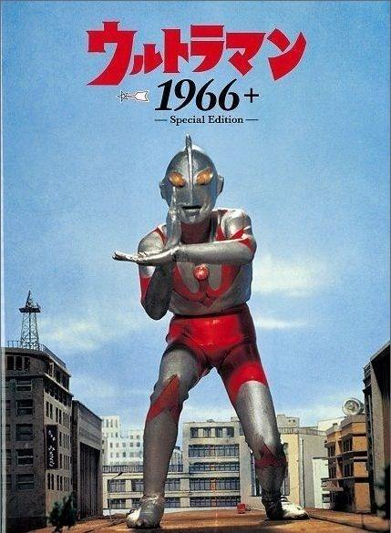

初代奥特曼
奥特曼（ウルトラマン），又称「初代奥特曼」，是日本奥特曼系列（ウルトラマンシリーズ）中的巨大变身英雄。首次登场于日本特摄电视剧《奥特曼》第1话《奥特作战第一号》（1966年7月17日）。

赛文奥特曼
奥特赛文是特摄剧《奥特赛文》中的主人公，来自M78星云·光之国的恒星观测员340号，起初是为了制作轨道图而来到地球，在目睹一个青年的英勇事迹后见证了人类的勇气与善良，便以这个青年的样貌为原形，化名为诸星团，自愿留在地球上；后来更加入奥特警备队，决心为保卫地球而战。
赛罗奥特曼
赛罗奥特曼，日本圆谷特摄剧《奥特曼》系列中登场的奥特战士。赛罗奥特曼是奥特赛文的儿子，光之国新一代的年轻奥特战士
迪迦奥特曼
迪迦奥特曼，日本圆谷特摄剧《迪迦奥特曼》及其衍生作品中的主角，也是首位拥有形态转化能力的奥特曼。不同于其他奥特曼的是，迪迦奥特曼是在地球的超古代时期就已经出现的巨人，但并非是地球出生的奥特曼。他原本是黑暗巨人，也是其中的领袖，后在超古代时期的地球警备队队长幽怜的劝说下弃暗投明，吸收了三个同伴的力量再封印了他们，最终成为光之巨人迪迦奥特曼。